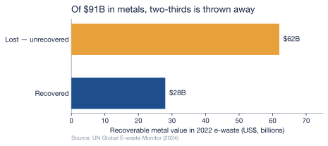

8 The E-Waste Wave
Chapter 7 left a generation of humanoids outclassed long before they are worn out, their bodies stranded and their brains stripped out and thrown after them. This chapter asks the question the lifecycle finally forces: where does all of that actually go? The answer is not a clean recycling loop. It is a waste stream that the world is already losing control of — and the robots are arriving into it at the worst possible moment, carrying the worst possible materials.
8.1 A system already losing the race
Begin with the ground the robots are landing on. The world generated 62 million tonnes of electronic waste in 2022, and the UN’s Global E-waste Monitor projects that figure will reach 82 million tonnes by 2030, rising by about 2.6 million tonnes every year (Baldé et al., 2024). That alone would be manageable if recycling kept pace. It does not. Less than a quarter of that mass — 22.3% in 2022 — was documented as formally collected and recycled, and the monitor projects the rate will fall to 20% by 2030 (Baldé et al., 2024). E-waste is growing roughly five times faster than the recycling meant to absorb it. The system is not approaching the problem; it is falling further behind it every year.
8.2 The value we bury
The loss is not only environmental. It is financial, and the numbers are large enough to matter to the argument of this book. The e-waste generated in 2022 contained metals worth about $91 billion — copper, gold, iron, the whole periodic table of a modern economy. Of that, only around $28 billion was recovered. The rest, some $62 billion in recoverable resources, was simply unaccounted for: landfilled, incinerated, or scattered through informal dumps where the materials are lost (Baldé et al., 2024).
And the single worst-recovered material is the one this book has spent two chapters on. Of all the rare-earth elements the world demands every year, only about 1% is supplied by e-waste recycling (Baldé et al., 2024). Recall what that means against Chapter 5: the United States and China built export controls, tariffs, and stockpiles around rare-earth magnets because China refines roughly 91% of the world’s supply and makes about 94% of the finished magnets (International Energy Agency, 2025). Those same magnets, at the end of a machine’s life, are recovered at a rate of one percent. The world fights for the material at the mine and throws it away at the dump.
8.3 Why a humanoid is the worst kind of e-waste
Into that failing system, now feed a humanoid. A smartphone weighs under 0.2 kilograms; a humanoid robot weighs on the order of 50 — reported figures for Tesla’s Optimus run from roughly 47 to 73 kilograms across its generations, so a single robot is hundreds of times the mass of the phone it is so often compared to.
| A smartphone | A humanoid robot | |
|---|---|---|
| Typical mass | under 0.2 kg | ~50 kg — hundreds of times a phone |
| Rare-earth content | a trace, in speakers and motors | a permanent magnet in every actuator — and actuators are more than half the bill of materials |
| Energy store | one small cell | a full-body battery pack |
| End-of-life path | part of the 62 Mt stream; ~22% recycled | falls into that same stream, with no recovery channel of its own |
But mass is the least of it, and it would be dishonest to pretend otherwise: even millions of humanoids would be a rounding error against 82 million tonnes a year. The danger is not the weight — it is the composition. A humanoid concentrates precisely the materials the system recovers worst. Nearly every electric actuator that moves it is built around a neodymium-iron-boron magnet, and Chapter 2 established that actuators are more than half of a humanoid’s entire bill of materials (Bank of America Institute, 2026); bonded into dense, mixed-metal assemblies, those magnets are exactly what the 1% recovery rate leaves behind. Each discarded humanoid is therefore a small, heavy parcel of the contested chokepoint material, posted directly into the 78% of e-waste that is never formally recovered.
Here honesty requires naming a gap rather than papering over it. Robots are not yet broken out as a category in global e-waste statistics; there is no measured tonnage of “robot e-waste,” and the speculative billion-units-by-2050 projections that circulate in industry reports rest on assumptions their authors cannot source. So this chapter does not forecast a tonnage. What it can say, on the evidence, is structural and harder to dismiss: the obsolescence clock of Chapter 7 is set to feed rising volumes of some of the densest, most critical-material-laden, and least-recyclable hardware in the stream into a system whose recovery rate is already falling.
8.4 The wave meets the chokepoint
There is a closing irony the rest of this book has been building toward. The same nations racing to secure rare earths — restricting their export, tariffing their import, subsidizing their mining — are simultaneously building the machines that will bury those rare earths at a 1% recovery rate. The robot race optimizes furiously for getting the chokepoint material and barely at all for keeping it. Every chapter so far has measured a cost on the way up the lifecycle; this is the cost at the bottom, where the material the whole race was fought over ends up scattered through landfills.
The obvious rejoinder is that this is precisely what a circular economy is supposed to fix — and, fairly stated, a humanoid is a better candidate for recovery than almost anything in the e-waste stream: it is high-value, individually identifiable, and owned in fleets by businesses rather than forgotten in a billion household drawers. In principle it should be the easy case. But “in principle” is carrying a great deal of weight in that sentence, and the measured trend points the other way — the recovery rate is falling, not rising, and the channels that might keep a retired robot’s materials in circulation are still improvised rather than systematic. Whether that loop can actually be closed, and what it would cost to close it, is the question the next chapter takes up.